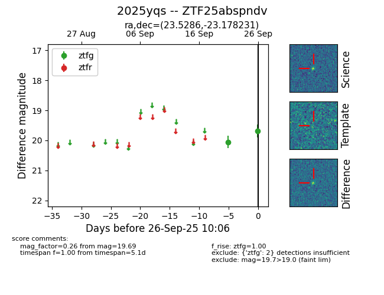

FINK: ZTF25abspndv
Lasair: ZTF25abspndv
ALeRCE: ZTF25abspndv
TNS: 2025yqs
YSE: 2025yqs
ZTF25abspndv (ztf,fink)
2025yqs (tns,yse)
equatorial (ra, dec) = (23.5286,-23.17823)
galactic (l, b) = (193.0228,-79.57131)

last ztfg=19.69
2 ztfg detections